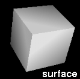
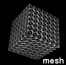
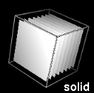

Benchmark measures graphics card and CPU performance on standard Chimera rendering tasks. It facilitates comparisons among hardware systems, and for users with access to different systems, indicates which will give the best performance with Chimera. Results can be sent to the Chimera developers for inclusion in the benchmark Web page.
There are several ways to start Benchmark, a tool in the Utilities category.
For accurate results, any models open in Chimera should be closed and any other processes running on the system should be halted before benchmarks are run. Other windows should not be placed on top of the Chimera graphics window during benchmark calculations.
The top part of the Benchmark panel contains explanatory text. Clicking Run Benchmarks performs all of the benchmark tasks (which may take several minutes) and appends the results to this text. The tasks include rendering atomic coordinates and volume data. Clicking Halt aborts benchmark calculations in progress. After the full set of benchmarks has been run, the Report Scores button can be clicked. Report Scores uses the bug-reporting system to send the results to the Chimera developers for inclusion in the benchmark Web page. Show scores reported by others opens that page in a browser window.
Typically, Measure frame rate continuously (every second) or one time (when that button is clicked) would not be used during a benchmark run, but instead to evaluate the actual frame rate during some manually executed display task. On some systems, Benchmark results are affected by the monitor refresh rate. The actual frame rate is additionally subject to the fixed delay introduced by Chimera (upper limit ~30 frames/sec).
Close dismisses the Benchmark interface, and Help opens this manual page in a browser window.
Show individual test controls displays buttons for running the various benchmarks individually.
Pressing one of the buttons next to Show standard model (surface, mesh, or solid) will open the specified model type of the specified size in the graphics window. Depending on the size and viewing angle, a solid model may look like a stack of planes; this is an artifact of the rendering procedure. The models can be closed with the Model Panel or the command close.
|  |  |  |
Chimera window comes to top. When the Chimera graphics window is covered by other windows, some systems will shortcut the drawing process. Running any of the benchmarks brings the graphics window to the top.
Timing method. The benchmark timings use wall clock time (the Python time.time() call) instead of CPU time (Python time.clock()) because the latter does not measure the time used by the graphics card.
Insufficient memory. The solid volume benchmark can run out of memory on a machine with fast graphics relative to main memory size.
Convergence method. Iterative bisection is used to find the 10 fps size for volume data. An alternative is to get the time for a given size and use a scaling law. However, there is no simple relationship between rate and data size; pixel fill rate, number of primitives, texture memory size, and CPU cache size can all cause hard-to-predict scaling behavior.